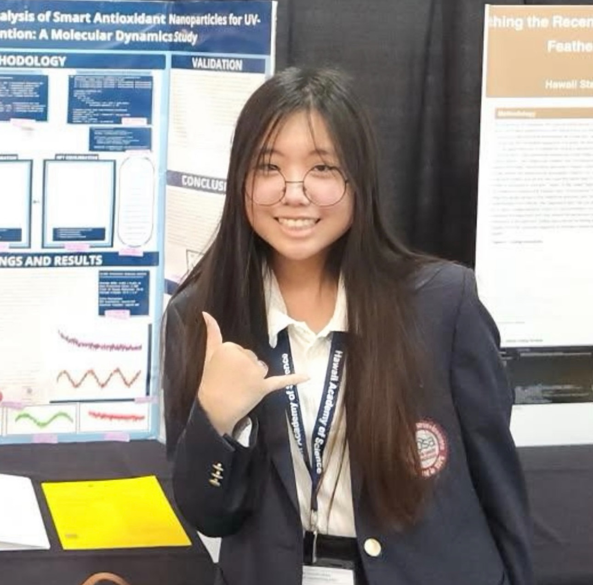
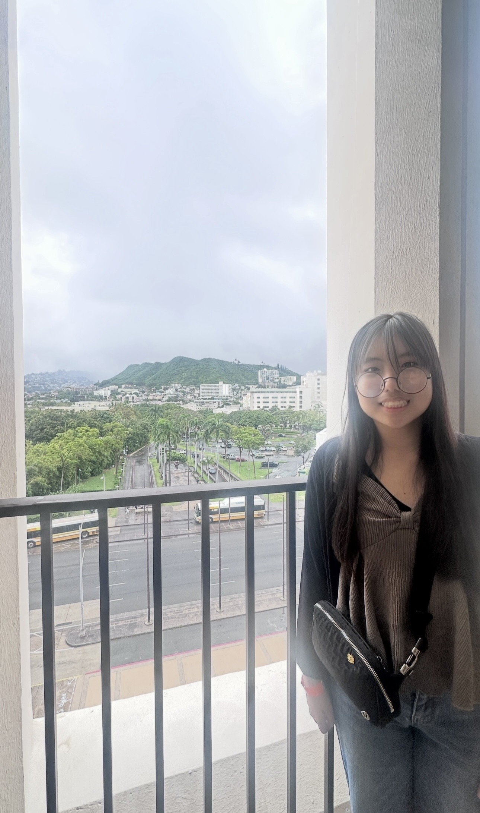
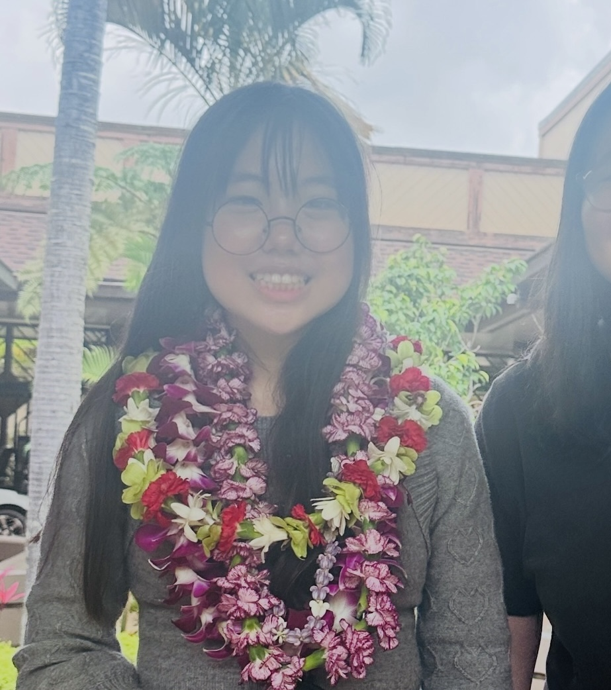

A sanctuary for the resilient, the poetic, and the chronically bold.
Episodic is more than a magazine. It is a living record of lives shaped by illness, documented with the precision of a literary journal and the heart of a grassroots movement.

Chelsey Miguel
Founder & Editor-in-Chief
Our Why
In a world that often views chronic illness as a tragedy to be fixed or a burden to be hidden, we choose to see it as a vantage point. Episodic's mission is to amplify the voices of those navigating fluctuating health, turning lived experience into art, advocacy, and community.
We believe that illness does not pause a life. It creates a different kind of life. One that is episodic, rhythmic, and deeply profound. Through honest storytelling and thoughtful curation, we bridge the gap between the clinical and the human.
Read our Advocacy work arrow_forwardEditorial Values
The pillars that uphold every page we publish.
Authenticity
We don't sugarcoat the "bad days," nor do we romanticize the struggle. We seek the raw, unpolished truth of what it means to live in a body that demands attention.
Accessibility
Design is an act of care. From cognitive load to physical interaction, our digital space is built for everyone, regardless of their current capacity.
Resilience
Resilience isn't just about "getting through it." It's about the creativity and wisdom found in adaptation. We celebrate the art of the pivot.
A Letter from the Founder
"When I started Episodic, I was searching for a space that felt like me. I didn't want a medical journal, and I didn't want a support group. I wanted a gallery. A place where my poems and my advocacy could coexist with the reality of my medical charts."
"I was recently diagnosed with lupus and found myself grieving the version of myself I used to be, the girl who could sprint effortlessly, who raised her hand without hesitation, who showed up every day. This magazine is my way of saying that your experience has value, not in spite of your illness, but because of the perspective it grants you."
"Thank you for being part of this. We are just getting started."

Chelsey Miguel
Founder & Editor-in-Chief
About the Founder
The person behind the pages.
Chelsey Miguel is a STEM enthusiast, writer, and disability advocate from Maui, Hawaiʻi. She founded Episodic Magazine after being diagnosed with lupus during high school, a diagnosis that changed not just her health, but her understanding of what it means to show up fully in a world not built for unpredictable bodies.
As a Native Hawaiian and Pacific Islander, Chelsey knows firsthand how chronic illness intersects with identity, community, and access. Her writing spans poetry, personal essay, and op-ed, all rooted in the belief that lived experience is its own form of expertise.
She has worked with the Hawaii Department of Education to advocate for stronger chronic illness accommodations under Section 504, and her op-ed on the subject was published in Honolulu Civil Beat.


7
Pieces Published
1
Issue Released
1
Op-Ed in Civil Beat
100%
Youth-Led
Want to be part of this?
Episodic is for everyone navigating chronic illness — whether you write, draw, photograph, or just have something to say. You don't need perfect words. Just your truth.